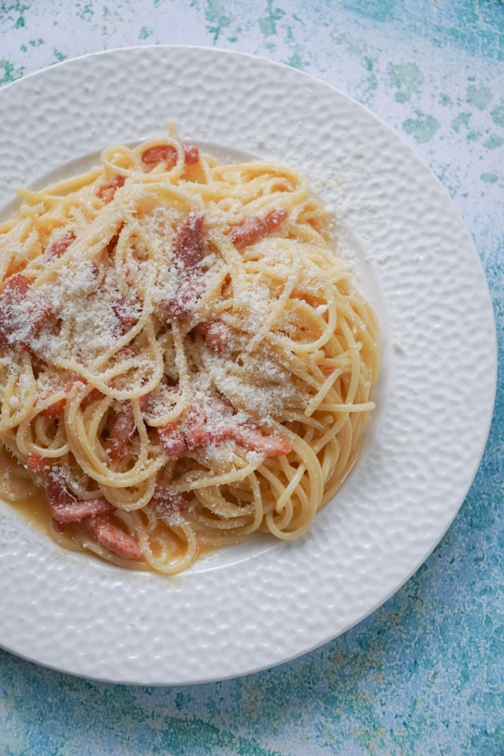
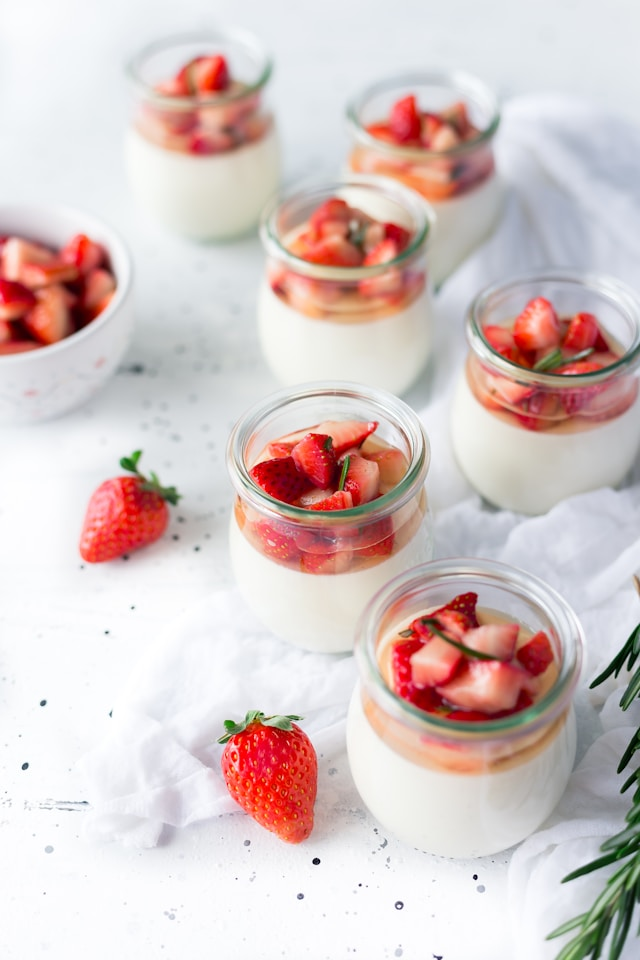

today's specials

LASAGNA AL FORNO

SPAGHETTI CARBONARA

PANNA COTTA
LASAGNA AL FORNO
SPAGHETTI CARBONARA
PANNA COTTA
Nestled in the heart of Italy's culinary tradition, Gusto was born from a passion for authentic flavors, warm hospitality, and the timeless joy of sharing good food. Founded by Chef Marco Bellini in 2012, Gusto began as a small family-run trattoria, where locals gathered to enjoy homemade pasta, seasonal ingredients, and stories over wine.
Inspired by his grandmother's recipes and the vibrant markets of Tuscany, Chef Marco dreamed of a place where guests could experience the true essence of Italian cuisine — simple, soulful, and unforgettable.
Over the years, Gusto has grown into a beloved destination for both locals and travelers. Every dish we serve is a tribute to our roots: hand-rolled gnocchi, slow-cooked ragù, and desserts that feel like a Sunday afternoon in Nonna's kitchen.
Today, Gusto is more than a restaurant — it's a celebration of tradition, flavor, and togetherness. Whether you're here for a quiet dinner, a family celebration, or a taste of something new, we invite you to sit back, savor every bite, and feel at home.
Benvenuti a Gusto.
Born and raised in the sun-drenched hills of Tuscany, Chef Marco Bellini discovered his love for cooking in his grandmother's rustic kitchen, where the scent of fresh basil and slow-simmered ragù filled the air. From a young age, Marco believed that food was more than nourishment — it was a language of love, memory, and connection.
After studying at the prestigious Culinary Institute of Florence, Marco traveled across Italy and France, honing his craft under Michelin-starred chefs. But despite the accolades and global techniques he acquired, his heart remained rooted in the traditional, homegrown flavors of his childhood.
In 2012, Marco returned to his hometown with a dream — to open a restaurant that would celebrate authentic Italian cuisine with a modern sensibility. And so, Gusto was born. Every dish that leaves his kitchen is infused with passion, heritage, and a deep respect for seasonal ingredients.
Today, Chef Marco is renowned for his signature dishes — from hand-cut pappardelle with wild boar sauce to delicate panna cotta topped with lavender honey. But beyond the food, what truly defines him is his warm hospitality and unwavering belief that the best meals are those shared with others.